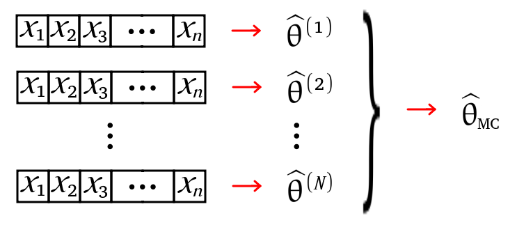

library(tidyverse)
# Define valores
N <- 10000
n <- 10
# Gera as amostras e calcula as estimativas
set.seed(1)
th1 <- replicate( N, mean(rnorm(n, mean = 3, sd = 1)) )
th2 <- replicate( N, sum(range(rnorm(n, mean = 3, sd = 1)))/2 )
# Distribuição das estimativas
L <- data.frame(th1, th2)
L <- L |> pivot_longer(cols = c(th1,th2),
names_to = "parametro",
values_to = "valores")Avaliando a Qualidade de Estimadores
Métodos Monte Carlo para Estimação
ESTAT0090 – Estatística Computacional
Prof. Dr. Sadraque E. F. Lucena
sadraquelucena@academico.ufs.br
Motivação
A motivação para esta aula é explorar o poder da simulação de Monte Carlo como uma ferramenta prática para a estatística. Em cenários onde a matemática para calcular propriedades como viés e erro padrão de um estimador é complexa, podemos usar o computador para simular o processo de amostragem milhares de vezes. Isso nos permite, de forma intuitiva, aproximar essas propriedades e, assim, comparar a eficácia de diferentes estimadores. Ao final, você será capaz de aplicar essa técnica para avaliar e validar modelos estatísticos, testando suas suposições de forma empírica e robusta, sem a necessidade de soluções analíticas complexas.
Objetivos da aula
Usar o Método de Monte Carlo para
- Estimar o Viés e o Erro Padrão
- Avaliar e Comparar Estimadores
- Construir Intervalos de Confiança
Estimação do Viés por Monte Carlo
- Seja \(X_1,\ldots,X_n\) uma amostra aleatória da distribuição de \(X\).
- Para estimarmos o parâmetro \(\theta\) por Monte Carlo fazemos:
- Geramos \(N\) amostras artificiais de \(X\), \(({\bf X}_1, \ldots, {\bf X}_N)\), em que cada \({\bf X}_j = (x^{(j)}_1,\ldots,x^{(j)}_n)\), \(j=1,\ldots,N\).
- Calculamos \(\widehat{\theta}^{(j)}=\widehat{\theta}({\bf X}_j)\).
- Obtemos o estimador de Monte Carlos fazendo \[ \widehat{\theta}_{MC} = \frac{1}{N} \sum_{j=1}^N \widehat{\theta}^{(j)}. \]
Estimação do Viés por Monte Carlo

Estimação do Viés por Monte Carlo
- O viés do estimador \(\widehat{\theta}\) para um parâmetro \(\theta\) é dado por \[B(\widehat{\theta}) = \mathbb{E}(\widehat{\theta}) - \theta, ~ \forall \theta \in \Theta\].
- Então, o viés estimado por Monte Carlo, é \[ \widehat{B}(\widehat{\theta}) = \widehat{\theta}_{MC} - \theta = \frac{1}{N} \sum_{j=1}^N \widehat{\theta}^{(j)} - \theta. \]
- O valor de \(\theta\) geralmente não é conhecido, mas podemos calcular sistematicamente \(\widehat{B}({\theta})\) para uma variedade de valores diferentes de \(\theta\), a fim de obter uma estimativa aproximada do limite superior para o viés de um estimador.
Estimação do Erro Padrão por Monte Carlo
- O erro padrão de um estimador \(\widehat{\theta}\) é dado por \(EP(\widehat{\theta}) = \sqrt{Var(\widehat{\theta})}\).
- No caso da média \(\overline{X}\), temos \(EP(\overline{X}) = \sqrt{Var(\overline{X})} = \sqrt{\frac{\sigma^2}{n}} = \frac{\sigma}{\sqrt{n}}\).
- Como a estimativa de Mote Carlo para \(\widehat{\theta}\) é uma média, seu erro padrão será \(\sqrt{Var(\theta)/N}\).
- Assim, o erro padrão de Monte Carlo é dado por \[ \widehat{EP}_{MC} = \frac{1}{\sqrt{N}} \sqrt{\frac{1}{N} \sum_{j=1}^N \left(\widehat{\theta}^{(j)} - \widehat{\theta}_{MC}\right)^2} \]
- No R o erro padrão é calculado usando .
Intervalos de Confiança de Monte Carlo
- A partir do Teorema Central do Limite, o intervalo de confiança \(1-\alpha\) para a média é dado por \[ \overline{X} \pm Z_{\alpha/2} \frac{\sigma}{\sqrt{n}}. \] No método de Monte Carlo, o intervalo fica \[ \widehat{\theta}_{MC} \pm Z_{\alpha/2} EP_{MC}. \]
Exemplo 16.1
Considere uma amostra aleatória \(X_1,\ldots,X_n\) de uma variável aleatória \(X\sim N(\mu=3,\sigma^2=1)\) e os seguintes estimadores pontuais \[ \widehat{\theta}_1 = \frac{1}{n} \sum_{i=1}^n X_i \qquad \text{e} \qquad \widehat{\theta}_2 = \frac{X_{(1)} + X_{(n)}}{2}. \] Qual do dois estimadores pode ser considerado como melhor para estimar o verdadeiro valor de \(\mu\)? Simule no R o viés e a variância para \(N=10\,000\) e \(n=10\).
- Para evitar criar o laço
for, você pode usar a funçãoreplicate.
Exemplo 16.1
Exemplo 16.1
th1 th2
2.997756 2.999629 th1 th2
0.003153728 0.004297744 Exemplo 16.2
Considere uma amostra aleatória \(X_1,\ldots,X_n\) de uma variável aleatória \(X\sim U(\min=2,\max=4)\) e os seguintes estimadores pontuais \[ \widehat{\theta}_1 = \frac{1}{n} \sum_{i=1}^n X_i \qquad \text{e} \qquad \widehat{\theta}_2 = \frac{X_{(1)} + X_{(n)}}{2}. \]
Qual do dois estimadores pode ser considerado como melhor para estimar o verdadeiro valor de \(\mu\)? Simule no R o viés e a variância para \(N=10\,000\), \(n= 2, 3, 5, 10, 20, 50, 100, 500, 1000\) e observe o comportamento.
Exemplo 16.3
Suponha que \(X_1\) e \(X_2\) são duas variáveis aleatórias i.i.d. de uma normal padrão. Usando simulação de Monte Carlo, obtenha uma estimativa de \(E(|X_1-X_2|)\) e seu erro padrão.
Exemplo 16.4
Considere o modelo \(y_i=\beta_0+\beta_1x_i+\varepsilon_i\) com \(\varepsilon_i\sim \mathcal{N}(0,\sigma^2_\varepsilon)\), \(x_i\sim exp(1/5)\) e \(i=1,\ldots,n\). Utilizar o Método de Monte Carlo para avaliar propriedades dos estimadores.
Exemplo 16.4
set.seed(12345)
# Fixando valores para os parametros
beta0 <- 1; beta1 <- -1; sigma2 <- 1
# Definindo o tamanho da amostra "n"
n <- 100
# Gerando um vetor de tamanho n para "x"
x <- rexp(n, rate=5)
# Gerando o erro:
erro <- rnorm(n, mean=0, sd=sqrt(sigma2))
# Calculando a resposta para o modelo especificado:
y <- beta0 + beta1*x + erro
# Ajuste do modelo:
modelo <- lm(y~x)
betas.estimados <- modelo$coefficients
sigma2.estimado <- sum(modelo$residuals^2)/modelo$df.residual
# Calculando os erros de estimacao
erro.estimacao.betas <- betas.estimados - c(beta0,beta1)
erro.estimacao.sigma2 <- sigma2.estimado - sigma2Exemplo 16.4
# Monte Carlo
set.seed(12345)
M <- 100 # numero de réplicas de Monte Carlo
betas.estimados <- matrix(,M,2) # Estimativas betas
sigma2.estimado <- numeric(M) # Estimativas sigma2
erro.estimacao <-matrix(,M,3) # Erros
for(i in 1:M){
erro <- rnorm(n, mean=0, sd=sqrt(1))
y <- beta0 + beta1*x + erro
modelo <- lm(y~x)
betas.estimados[i,] <- coefficients(modelo)
sigma2.estimado[i] <- sum(modelo$residuals^2)/
modelo$df.residual
erro.estimacao[i,]<-c(betas.estimados[i,],
sigma2.estimado[i]) - c(beta0,beta1,sigma2)
}Exemplo 16.4
Exemplo 16.4
Exemplo 16.4
media.estimativas <- c(colMeans(betas.estimados),
mean(sigma2.estimado))
vies <- round(colMeans(erro.estimacao),5)
var.estimadores <- c(round(apply(betas.estimados,2,
sd),5),sd(sigma2.estimado))
eqm <- var.estimadores + vies^2
saida <- rbind(media.estimativas,eqm,vies,
var.estimadores)
colnames(saida) = c(paste("beta0 =",beta0),
paste("beta1 =",beta1),
paste("sigma2 =",sigma2))
saida beta0 = 1 beta1 = -1 sigma2 = 1
media.estimativas 0.9986581 -0.9967386 0.9959339
eqm 0.1351718 0.4735606 0.1518112
vies -0.0013400 0.0032600 -0.0040700
var.estimadores 0.1351700 0.4735500 0.1517947Ganho da aula
- Capacidade de avaliar a qualidade de estimadores
- Escolher o melhor estimador
- Validação resultados
- Aplicação em problemas complexos
- Aprimoramento das habilidades de simulação
Fim
Aula baseada no material “Métodos Computacionais Aplicados à Estatística Implementação no Software R” de Cristiano de Carvalho Santos.